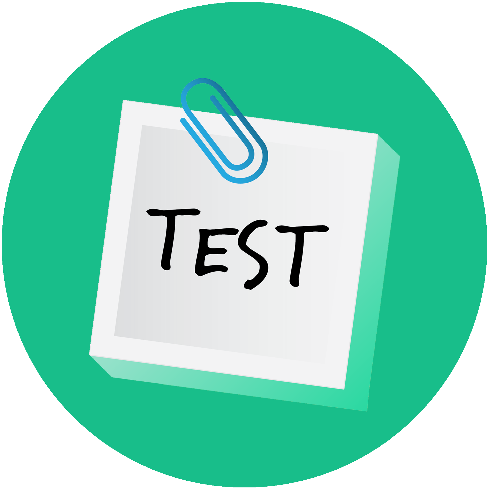

Courses
.Net Developer
Weekend Only
10 Students
A fully knowledgeable .NET developer can use .NET to build a highly distributed web application, a sophisticated desktop application, or even a modern mobile application.
Batch Starts from Next Week
Java Developer

Weekend Only
10 Students
A Java developer is a specialised type of programmer who may collaborate with web developers and software engineers to integrate Java into business applications, software and websites.
Batch Starts from Next Week
Full Stack Developer
Weekend Only
30 Students
A full stack developer is one who can handle databases, servers, systems engineering, and clients. Depending on the project, the need may be a mobile stack, a Web stack, or a native application stack.
Batch Starts from Next Week
Automation Tester
Weekdays/ Weekend
10 Students
Automation testing is a Software testing technique to test and the actual outcome with the expected outcome, achieved by writing test scripts or using any automation testing tool.
Batch Starts from Next Week
Power BI

Weekdays/ Weekend
10 Students
Power BI is a business analytics service by Microsoft. It provides interactive visualizations and business intelligence capabilities with a simple interface for end users to create reports and dashboards.
Batch Starts from Next Week
Software Testing

Weekdays/ Weekend
10 Students
Software testing is a process to evaluate the functionality of a software application to find whether it has met the requirements and to identify the defects to ensure that the product is defect free.
Batch Starts from Next Week
Agile Process

Weekdays/ Weekend
10 Students
Agile is a time boxed, iterative approach to software delivery that builds software incrementally from the start of the project, instead of trying to deliver it all at once near the end
Batch Starts from Next Week